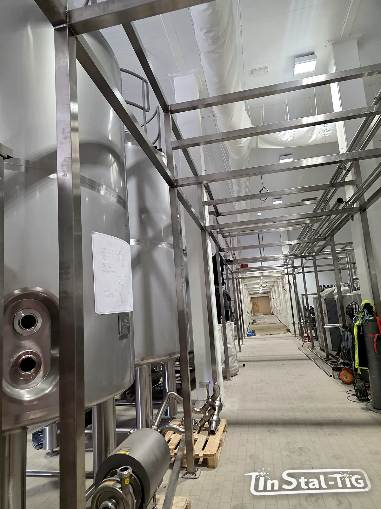

Konstrukcje wsporcze pod rurociągi: rozstaw podpór i kompensacja wydłużeń

Przy instalacji uwagę przyciągają rury, zawory i spoiny. Tymczasem to podpory decydują, czy rurociąg po latach nadal ma spadek, czy nie pęka przy spoinach i czy nie ciągnie za króćce pomp i zbiorników. Wyjaśniamy, od czego zależy rozstaw podpór, dlaczego rury nierdzewne „rosną” przy myciu na gorąco i jak sobie z tym radzić.
Po co dobra konstrukcja wsporcza?
- Trzyma spadek. Rura, która ugina się między podporami, tworzy „worki”, w których po myciu stoi woda (o spadkach piszemy w artykule o higienicznych instalacjach).
- Przenosi ciężar rury, medium, izolacji i armatury, tak żeby nie wisiały na spoinach ani na króćcach urządzeń.
- Pozwala rurze pracować. Gorąca rura się wydłuża. Podpory muszą to wydłużenie przyjąć albo pokierować nim tam, gdzie nie zaszkodzi.
Od czego zależy rozstaw podpór?
Nie ma jednej liczby dla wszystkich instalacji. Rozstaw zależy przede wszystkim od:
- średnicy i grubości ścianki rury (rury higieniczne mają cienkie ścianki, więc uginają się łatwiej niż grube rury przemysłowe),
- ciężaru medium, izolacji i armatury (zawory i czujniki to obciążenia skupione, które potrzebują własnych podpór blisko),
- temperatury pracy,
- dopuszczalnego ugięcia, które w instalacjach higienicznych wynika ze spadku: ugięcie między podporami musi być wyraźnie mniejsze niż spadek na tym odcinku.
Ugięcie bardzo szybko rośnie z rozstawem: przy dwa razy większym rozstawie jest ok. 16 razy większe (rośnie z czwartą potęgą długości). Dla przykładu rura 53 × 1,5 mm wypełniona wodą, bez izolacji i armatury, swobodnie podparta na końcach odcinka, ugina się orientacyjnie o:
| Rozstaw podpór | Ugięcie w połowie odcinka |
|---|---|
| 2 m | ok. 0,5 mm |
| 3 m | ok. 2,6 mm |
| 4 m | ok. 8 mm |
To uproszczony przykład, który pokazuje skalę zjawiska. Rozstaw dla konkretnej instalacji dobiera się do jej obciążeń, spadków i wymagań zakładu.
Wydłużenia cieplne: ile „rośnie” rura?
Wydłużenie liczy się ze wzoru ΔL = α · L · ΔT, gdzie α to współczynnik rozszerzalności cieplnej. Dla austenitycznej stali nierdzewnej (304, 316L) wynosi on ok. 16 · 10⁻⁶ 1/K, czyli więcej niż dla zwykłej stali węglowej (ok. 12 · 10⁻⁶ 1/K).
| Długość odcinka | Wzrost temperatury | Wydłużenie |
|---|---|---|
| 10 m | 50 K | ok. 8 mm |
| 10 m | 70 K | ok. 11 mm |
| 20 m | 70 K | ok. 22 mm |
| 30 m | 70 K | ok. 34 mm |
Wzrost o 70 K to na przykład rura w hali o temperaturze ok. 15 °C myta roztworem o temperaturze ok. 85 °C. W instalacjach z gorącym myciem CIP (więcej w artykule o myciu CIP) rura wydłuża się i skraca przy każdym cyklu mycia, czasem kilka razy dziennie.
Punkty stałe, podpory przesuwne i prowadnice
- Punkt stały mocuje rurę na sztywno. Od niego wydłużenie rozchodzi się w obie strony. Punkty stałe stawia się m.in. przy pompach, zbiornikach i rozgałęzieniach, żeby rura nie pchała urządzeń.
- Podpora przesuwna niesie ciężar, ale pozwala rurze przesuwać się wzdłuż osi.
- Prowadnica pozwala na ruch wzdłuż osi, ale nie pozwala rurze uciec na boki.
Częsty błąd to zbyt mocno dokręcone obejmy na podporach, które miały być przesuwne. Rura nie może się wtedy wydłużyć i naprężenia trafiają w spoiny, kolana i króćce.
Jak przejąć wydłużenie?
- Kompensacja naturalna: trasa z kolanami w kształcie litery L lub Z. Ramię prostopadłe do wydłużającego się odcinka ugina się i przejmuje ruch. To najprostsze i zwykle najbardziej higieniczne rozwiązanie.
- Kompensator U (lira): pętla z czterech kolan wstawiona w długi prosty odcinek, gdy trasa nie ma naturalnych załamań.
- Kompensatory mieszkowe: zajmują mało miejsca, ale mają pofałdowania, które trudno umyć. W liniach produktowych raczej się ich unika, a stosuje je w mediach pomocniczych.
Warto wiedzieć: rura nierdzewna położona bezpośrednio na stalowej, czarnej konstrukcji może łapać rdzę od obcego żelaza, a w wilgoci dochodzi do korozji galwanicznej. Pomagają podkładki lub wkładki izolujące w obejmach albo konstrukcja ze stali nierdzewnej w strefach mokrych (o przyczynach rdzy piszemy w tekście o korozji stali nierdzewnej).
Konstrukcja w strefie higienicznej
- profile zamknięte szczelnie zaspawane albo otwarte i łatwe do umycia, bez szczelin,
- jak najmniej poziomych półek, na których zbiera się brud i woda,
- obejmy, które nie tworzą szczelin z rurą i dają się umyć,
- odstęp rur od ścian i od siebie, który pozwala dojść z myjką.
Podobne zasady dotyczą pomostów i podestów, o których piszemy w artykule o wymaganiach BHP dla pomostów i schodów.
Co przygotować przed zamówieniem?
- trasę rurociągu (rysunek lub zdjęcia) i średnice rur,
- temperatury pracy i mycia,
- gdzie stoją pompy, zbiorniki i zawory,
- do czego można mocować konstrukcję (posadzka, ściany, strop, istniejące konstrukcje),
- czy konstrukcja stoi w strefie mokrej lub higienicznej.
Te informacje możesz przesłać przez formularz Wycena online.
Potrzebujesz konstrukcji pod rurociągi?
Zadzwoń albo napisz. Prześlij trasę rur i temperatury pracy, a doradzimy rozwiązanie i przygotujemy wycenę.
Zadzwoń: 667 466 431 Napisz e-mail Wycena online